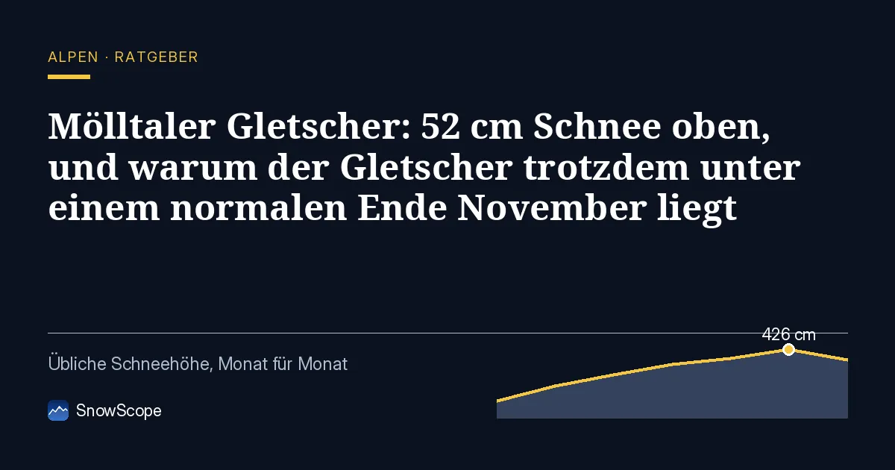

Mölltaler Gletscher: 52 cm Schnee oben, und warum der Gletscher trotzdem unter einem normalen Ende November liegt
Am Mölltaler Gletscher liegen heute 52 cm Schnee im oberen Bereich, nachdem am Donnerstag 26 cm Neuschnee gefallen sind. Für Österreichs südlichstes Gletscherskigebiet ist das trotzdem weniger als üblich: Auf 2.594 m liegen 39 cm, normal sind Ende November 77 cm.
Die Live-Schneeprognose für Mölltaler Gletscher in der SnowScope-AppSchneehöhen, Pulverschnee-Alarme und 3D-Karte, gratis.
Schneebericht, Freitag 27. November
Oben: 52 cm. Neuschnee: 29 cm in drei Tagen, 38 cm in sieben Tagen. Prognose: trocken bis Montag, auch in den folgenden Tagen kaum Niederschlag. Die Pisten am Gletscher reichen von 2.103 m bis 3.084 m; der Zugang erfolgt über die unterirdische Standseilbahn von Flattach.
Bei trockenem, kaltem Wetter sind die Gletscherpisten am Vormittag griffig und schnell; am Nachmittag kann der Wind am Grat Triebschnee verfrachten.
Wie ungewöhnlich ist das?
Der Mölltaler Gletscher ist normalerweise einer der früh schneesichersten Orte Österreichs. Eine Schneedecke von 30 cm gibt es dort in einem üblichen Winter ab Anfang Oktober, und am 8. Dezember liegen auf 2.594 m meist schon 105 cm.
Diesen Herbst kam der Schnee nördlich des Alpenhauptkamms häufiger an als im Süden. Kärnten hat weniger abbekommen als Tirol oder Salzburg, und das sieht man am Gletscher. Ein Grund zur Sorge ist das nicht: Selbst der schwächste der 46 Winter, 1995-96, erreichte einen Höchststand von 202 cm.
Das Wetter bis Anfang Dezember
Das Wochenende bringt Sonne und Frost, am Montag höchstens etwas Bewölkung. In den nächsten sieben Tagen erwarten wir am Gipfel nur 1 cm Neuschnee. Für Skifahrer heißt das: gute Sicht, harte Pisten am Morgen, und in der Sonne weicher Schnee ab Mittag.
Und Weihnachten?
Weihnachten ist am Gletscher kaum eine Frage: Ein üblicher 25. Dezember hat auf 2.594 m 131 cm, und in 98 % der Winter lagen zu Neujahr mehr als 50 cm. Auch wenn der Dezember ruhig bleibt, ist der Gletscher die sicherste Adresse in Kärnten für die Feiertage.
Der schneereichste Monat ist meist der März mit rund 245 cm; das Skigebiet bleibt oft bis in den Frühsommer offen.
Für wen sich der Gletscher jetzt lohnt
Im Frühwinter kommen vor allem Rennläufer, Skiclubs und Skifahrer aus Kärnten, der Steiermark und Slowenien, die vor der Saison in den Tälern die ersten Schwünge machen wollen. Unter der Woche ist es ruhig; an Wochenenden mit Sonne füllen sich die Parkplätze an der Talstation am Vormittag.
Wer im Dezember sichere Pisten sucht, ist hier richtig: Ein üblicher 15. Dezember hat auf 2.594 m bereits 122 cm. Familien finden am Gletscher breite, eher flache Hänge, aber auch das raue Hochgebirgsklima: Wind und Kälte sind die eigentliche Herausforderung, nicht die Steilheit.
Der Vergleich mit den Nordtiroler Gletschern zeigt, wie unterschiedlich der Herbst war: Dort liegt mehr Schnee als üblich, hier etwas weniger. Für die Qualität der Pisten macht das im Moment kaum einen Unterschied, weil der Gletscher von Beginn an präpariert wird und die Beschneiung die Lücken schließt.
Ein Blick auf die Statistik der Feiertage: Am 31. Dezember liegen auf 2.594 m üblicherweise 143 cm, am 6. Januar 147 cm. Damit gehört der Mölltaler Gletscher zu den wenigen Orten in Österreich, an denen man auch in einem schneearmen Winter zu Silvester sicher auf Naturschnee fährt. Die Talorte Flattach und Obervellach bieten günstigere Unterkünfte als die großen Tiroler Skiorte, und das Mölltal ist auch für Rodeln und Winterwandern bekannt.
Anreise und Tipps
Von Villach und Spittal erreicht man Flattach im Mölltal in rund einer Stunde; die Talstation der Standseilbahn hat große Parkplätze. Weil die Bahn unterirdisch fährt, ist der Zugang zum Gletscher auch bei Sturm meist möglich, wenn andere Gletscher ihre Lifte stoppen.
Aktuelle Werte und Prognose für Tal, Mitte und Gipfel: Mölltaler Gletscher Schneehöhe.
Tipps für Skifahrer
- Früh am Morgen fahren: die Pisten sind dann am besten, und die Sonne wärmt am Nachmittag.
- Warme Kleidung für die Bergstation: am Gletscher ist es auch im Sonnenschein oft deutlich unter null.
- Sonnencreme und Gletscherbrille nicht vergessen; die Strahlung ist auf dieser Höhe stark.
- Mehr: der Mölltaler Gletscher Monat für Monat und die Seite Österreich.
Zu diesen Zahlen
Schneewerte: die SnowScope-Schneekarte und -Vorhersage von heute und unsere Bilanz von 46 vergangenen Wintern pro Skigebiet (eine Schätzung für die Fläche, keine Meldung des Skigebiets).
Offizielle Lawinenlageberichte: Lawinenwarndienst Kärnten
Diesen Bericht zitieren
Für Forschung, Lehre oder Presse: Zahlen und Grafiken sind unter CC BY 4.0 mit dieser Quellenangabe frei nutzbar.
SnowScope (2026), Mölltaler Gletscher: 52 cm Schnee oben, und warum der Gletscher trotzdem unter einem normalen Ende November liegt, https://snowscope.app/blog/de/2026/11/moelltaler-gletscher-schneehoehe-ende-november-2026-und-wetter-erste-dezemberwoche.html, abgerufen am 2026-11-27
SnowScope (Atlas Labs). (2026, November 27). Mölltaler Gletscher: 52 cm Schnee oben, und warum der Gletscher trotzdem unter einem normalen Ende November liegt. SnowScope snow reports. https://snowscope.app/blog/de/2026/11/moelltaler-gletscher-schneehoehe-ende-november-2026-und-wetter-erste-dezemberwoche.html
BibTeX
@misc{snowscope2026moelltalergletscherschne,
author = {{SnowScope (Atlas Labs)}},
title = {Mölltaler Gletscher: 52 cm Schnee oben, und warum der Gletscher trotzdem unter einem normalen Ende November liegt},
year = {2026},
month = nov,
howpublished = {\url{https://snowscope.app/blog/de/2026/11/moelltaler-gletscher-schneehoehe-ende-november-2026-und-wetter-erste-dezemberwoche.html}},
note = {Published 2026-11-27 22:06 UTC; accessed 2026-11-27}
}· CC BY 4.0 · Methoden, Daten und Werkzeuge →
Mölltaler Gletscher: Schnee und Temperatur nach Höhe, dieser Winter vs letzter (Werkzeuge) →
Mölltaler Gletscher folgen
Gratis: eine Nachricht, wenn Neuschnee kommt, und jeden Morgen die Vorhersage.
Weitere Schneeberichte

Zwölf bekannte Alpenskigebiete nach ihrer üblichen Dezember-Schneehöhe an der Mittelstation und am Gipfel gereiht, aus 46 vergangenen Wintern, mit dem Boden eines schwachen Dezembers und den Wochen, die nie enttäuschen.

Zugspitze, Garmisch-Classic, Brauneck, Sudelfeld, Spitzingsee, KitzSki und Kühtai: Schnee heute, was der Dezember normalerweise bringt und welcher Tagesausflug sich lohnt.